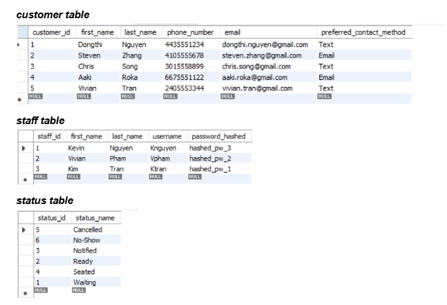

System Analysis Modeling
Created a use case diagram for a restaurant waitlist system to show how staff and customers interact with the system. This project demonstrates my understanding of system requirements, actors, use cases, and process modeling in system analysis.

Database Structure Project
Designed relational database tables for a waitlist system, including customer, staff, and status data. This project strengthened my skills in organizing structured data, building table relationships, and designing databases that support real-world business processes.

AI-Powered Posture Monitoring Tool
Built a posture detection web app and Chrome extension that gives users real-time feedback when they slouch. This project reflects my experience with JavaScript, HTML/CSS, browser extensions, and building practical tools that improve everyday user habits.

Interactive Front-End Project
Designed a playful interactive webpage with custom visuals and user interaction elements. This project highlights my front-end creativity and ability to build engaging interfaces using HTML, CSS, and JavaScript.